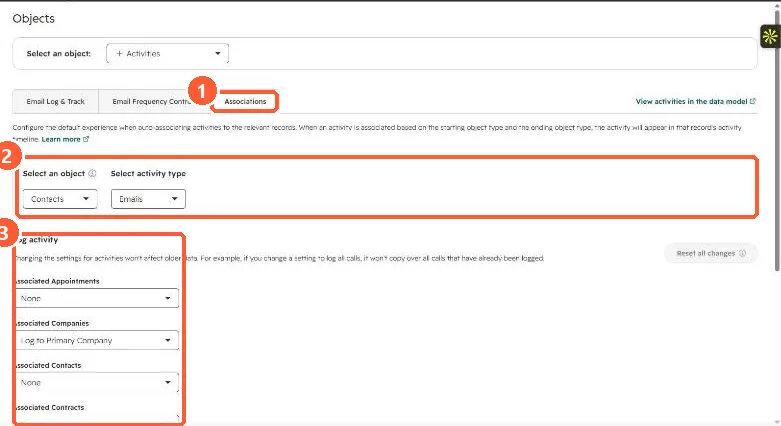

Short answer
HubSpot's KB says an activity logged on a contact is associated with the contact's primary company and its five most recent associated open deals. Closed deals do not get it. These defaults can be changed in Settings > Objects > Activities > Associations per object and activity type. My demo portal is set to log contact emails to only the one most recently associated deal. When the deal matters, log from the deal record or edit the email's associations.
1. The setting
For Contacts and Emails, my demo portal logs to the primary company and to 1 most recently associated deal. The panel notes activities are logged only to open deals.


2. Why it goes wrong
- The newest associated deal is not always the active conversation.
- A deal closed won or lost no longer receives activity, even if the email is about it.
- Sequence emails follow the same rule: primary company plus the five most recent open deals.
3. Fixes
Log or send from the deal record when the email is about that deal. Edit associations on an email from its timeline card. If you change the setting, it only affects new activity. Related: email log and track settings.